Gérer le Patrimoine Informatique
CRM Kodoka

▸ Exploiter des référentiels, normes et standards adoptés par le prestataire informatique
▸ Mettre en place et vérifier les niveaux d’habilitation associés à un service
▸ Vérifier les conditions de la continuité d’un service informatique
▸ Gérer des sauvegardes
▸ Vérifier le respect des règles d’utilisation des ressources numériques
Stage CRM Kodoka
▸ Exploiter des référentiels, normes et standards adoptés par le prestataire informatique
Base de données aucune information en claire. Demande de l'entreprise.
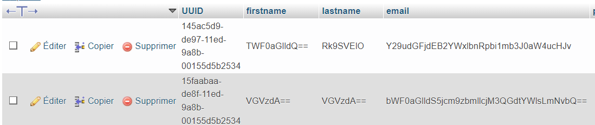▸ Mettre en place et vérifier les niveaux d’habilitation associés à un service
Système de permission permettant de vérifier avant chaque page les droits d'accès d'un utilisateur.
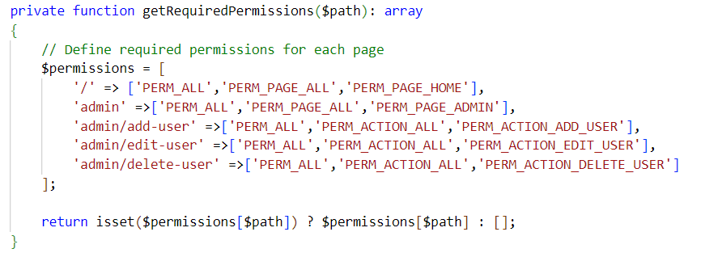▸ Vérifier les conditions de la continuité d’un service informatique
Notre projet est entièrement commenté. Les variables sont nommées de manière claire et précise permettant ainsi une maintenance correcte du site.
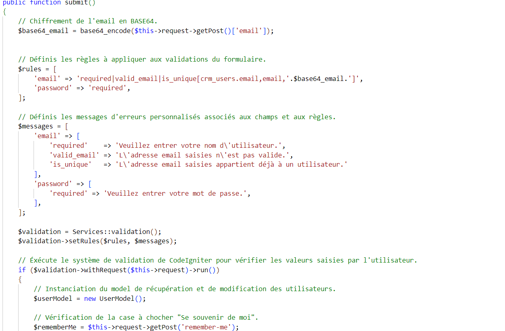▸ Gérer des sauvegardes
Tout le projet est sauvegardé sur GitHub (en plus de nos espaces disques).
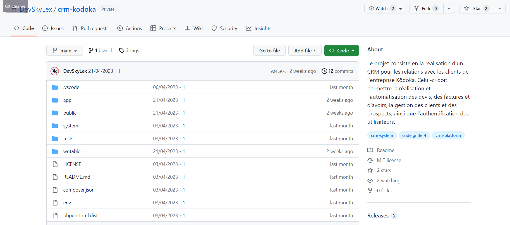▸ Vérifier le respect des règles d’utilisation des ressources numériques
Notre site respecte les normes pour les bonnes pratiques comme on peut le voir avec l'évaluation du lighthouse de Google.
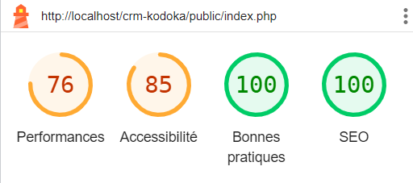Portfolio
▸ Recenser et identifier les ressources numériques
▸ Exploiter des référentiels, normes et standards adoptés par le prestataire informatique
▸ Vérifier les conditions de la continuité d’un service informatique
▸ Gérer des sauvegardes
▸ Vérifier le respect des règles d’utilisation des ressources numériques
Portfolio
▸ Exploiter des référentiels, normes et standards adoptés par le prestataire informatique
Convention de nommage. Respect des bonnes pratiques (exemple : Block Element Modifier).
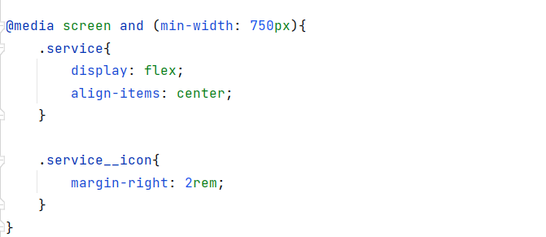▸ Vérifier les conditions de la continuité d’un service informatique
Mon portfolio est entièrement commenté. Les variables sont nommées de manière claire et précise permettant ainsi une maintenance correcte du site.
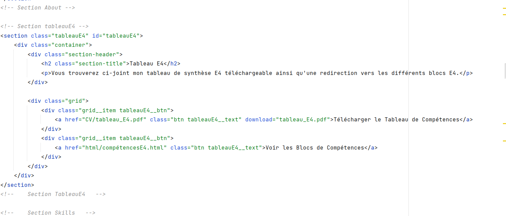▸ Vérifier le respect des règles d’utilisation des ressources numériques
Mon portfolio respecte les normes pour les bonnes pratiques comme on peut le voir avec l'évaluation du lighthouse de Google.
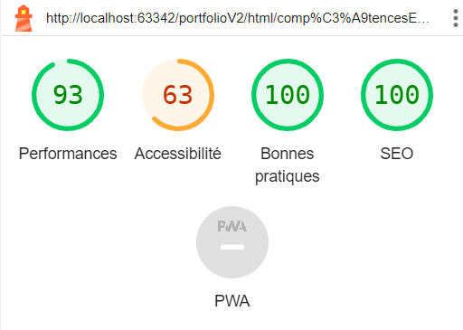Répondre aux incidents et aux demandes d’assistance et d’évolution
CRM Kodoka
▸ Collecter, suivre et orienter des demandes
▸ Traiter des demandes concernant les applications
Développer la présence en ligne de l’organisation
CRM Kodoka
▸ Participer à la valorisation de l’image de l’organisation sur les médias numériques
en tenant compte du cadre juridique et des enjeux économiques
▸ Participer à l’évolution d’un site Web exploitant les données de l’organisation
Stage CRM Kodoka
▸ Participer à la valorisation de l’image de l’organisation sur les médias numériques en tenant compte du cadre juridique et des enjeux économiques
Le site a été réalisé pour l'entreprise en reprenant leur logo et leur style graphique.
▸ Participer à l’évolution d’un site Web exploitant les données de l’organisation
Le site est réalisé de manière à pouvoir utiliser les données de l'entreprise comme demandé dans la demande client reçu avant la réalisation du projet.
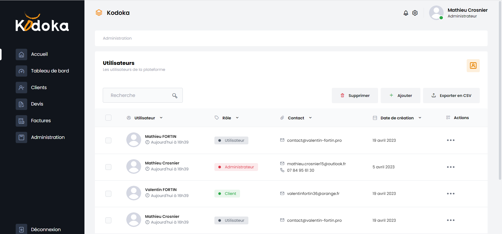Portfolio
▸ Participer à la valorisation de l’image de l’organisation sur les médias numériques
en tenant compte du cadre juridique et des enjeux économiques
▸ Référencer les services en ligne de l’organisation et mesurer leur visibilité
▸ Participer à l’évolution d’un site Web exploitant les données de l’organisation
Travailler en mode projet
CRM Kodoka
▸ Analyser les objectifs et les modalités d’organisation d’un projet
▸ Planifier les activités
▸ Évaluer les indicateurs de suivi d’un projet et analyser les écarts
Mettre à disposition des utilisateurs un service informatique
CRM Kodoka
▸ Déployer un service
▸ Accompagner les utilisateurs dans la mise en place d’un service
Stage CRM Kodoka
▸ Accompagner les utilisateurs dans la mise en place d’un service
Création d'un fichier readme pour accompagner les utilisateurs dans la mise en place du crm.
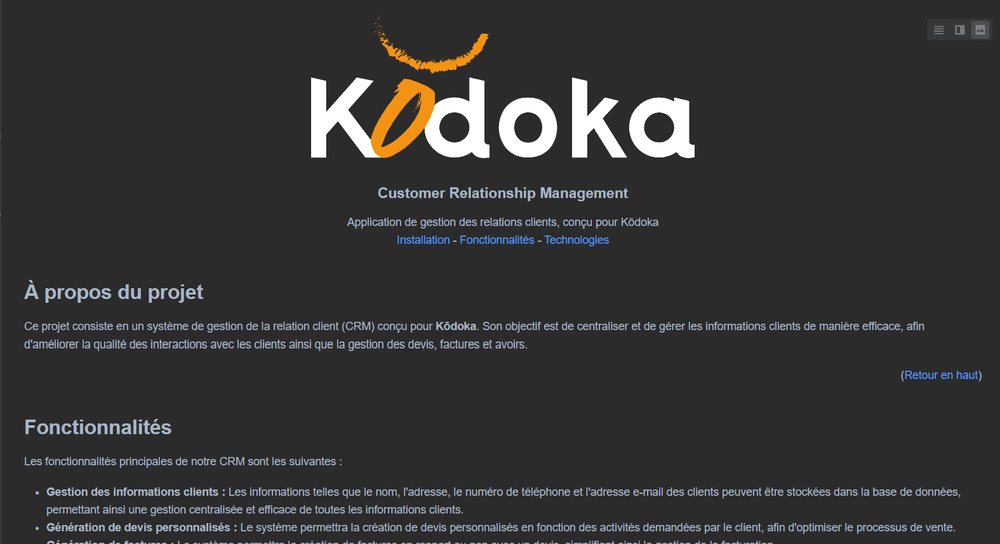Organiser son développement professionnel
CRM Kodoka
▸ Mettre en place son environnement d’apprentissage personnel
▸ Mettre en œuvre des outils et stratégies de veille informationnelle
Stage CRM Kodoka
▸ Mettre en place son environnement d’apprentissage personnel
Pour la réalisation de ce projet j'ai dû créer mon espace de travail sur visual studio code et utiliser live share (un add-on pour travailler à plusieurs)
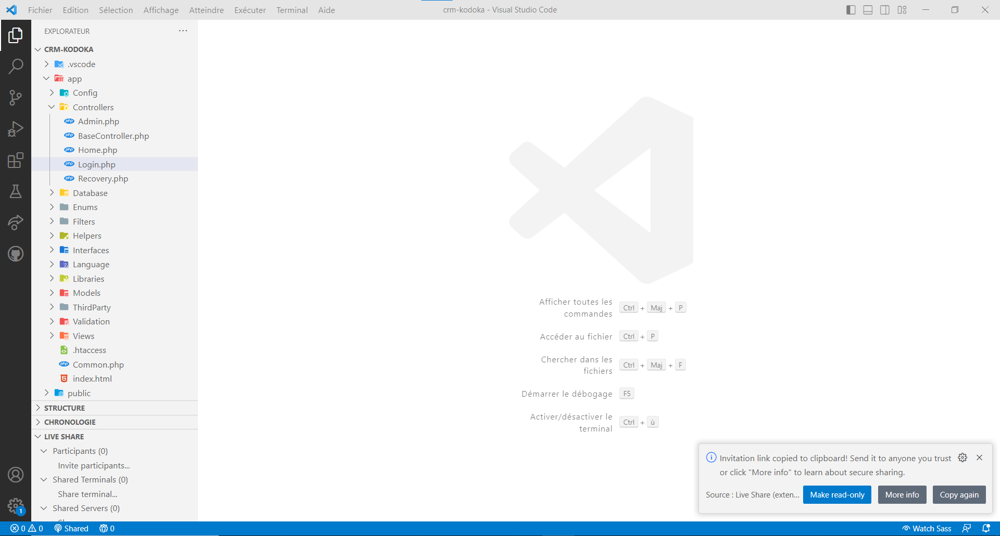Portfolio
▸ Mettre en place son environnement d’apprentissage personnel
▸ Gérer son identité professionnelle
▸ Développer son projet professionnel
Portfolio
▸ Mettre en place son environnement d’apprentissage personnel
Pour la réalisation de mon portfolio j'ai dû créer mon espace de travail sur phpStorm.
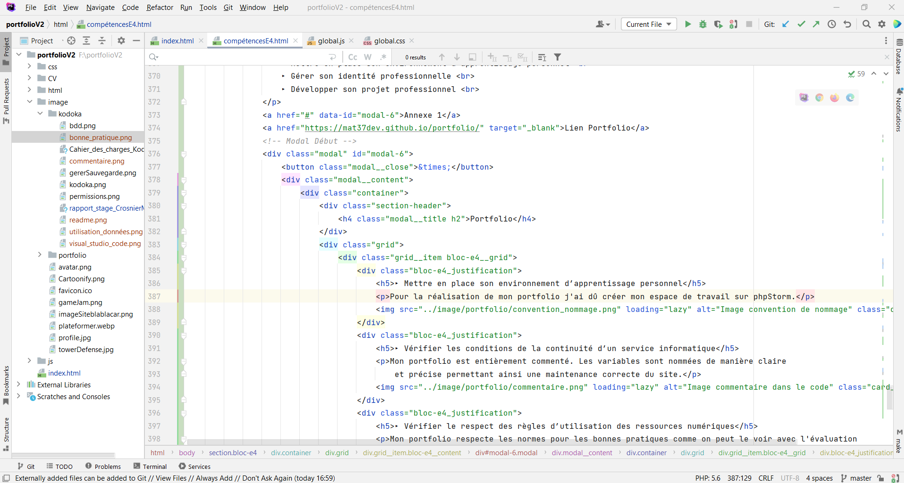